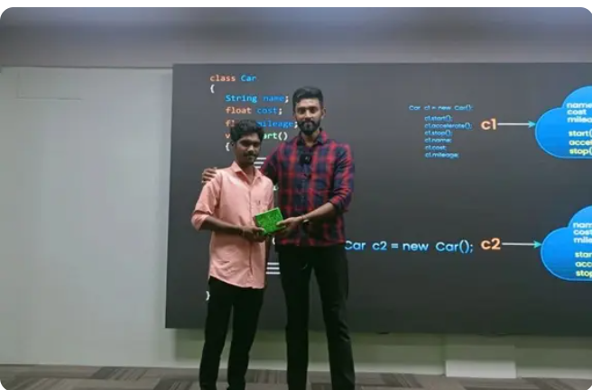
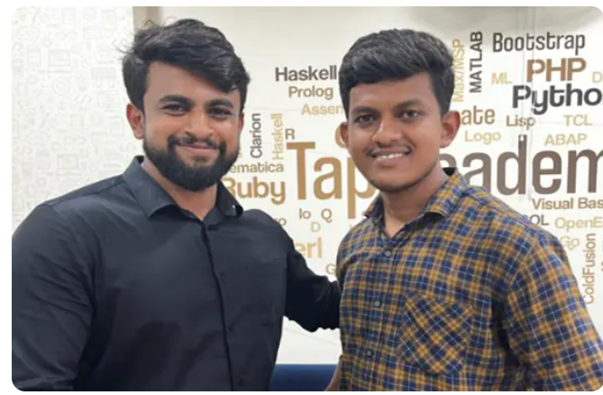

Home Course Student Reviews Hire From Us Contact Us
Home Course Student Reviews Hire From Us Contact Us
Home Course Student Reviews Hire From Us Contact Us
Our complete online training has made students learn to code anything anywhere
& got placed in various Companies.Here are our few students placed at various companies
A warm thanks to the Tap Academy team.
I am Gowtham GM from Tamilnadu, a 2024 passed-out student. I joined
Tap Academy as a CSR student in the month of February. My journey
with Tap Academy is quite different. The trainers at Tap Academy are
skilled and experienced. They teach a lot of new concepts and help in
learning programming languages from scratch.
I am from the Computer Science branch, but the teaching at Tap
Academy is structured in a way that makes it easy for students from all
domains to understand the concepts and technology taught by the
trainers.
Finally, I got placed as a Software Engineer at Revature with a package
of 3.25 LPA. The placement team helped me a lot in securing this job.
Thank you to the entire Tap Academy team for helping me acquire this
opportunity.

After joining Tap Academy, I have improved my programming skills, and
my knowledge of core Java has also improved. Now, I am learning the
Collection Framework, MySQL, HTML, and CSS in parallel.
Through the TAI platform, I have enhanced my problem-solving skills.
Additionally, the LMS makes it easy to watch all the recorded videos.
They also provide recorded videos of frameworks like J2EE, Spring,
Data Structures, etc.
I got placed in Promantia Business Solutions for the role of Associate
Technical Consultant with a package of 3 LPA.
Thank you TAP ACADEMY for giving me this opportunity.
